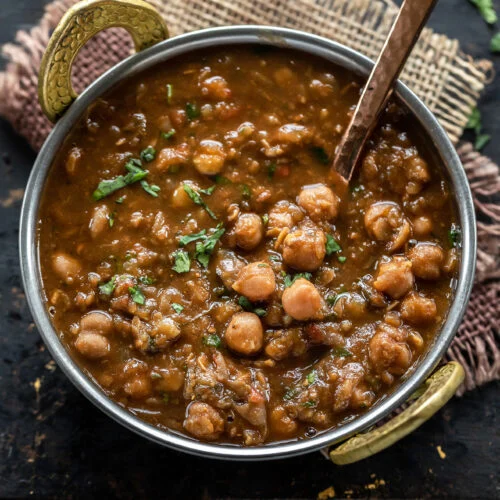

Chole

Chole is a popular North Indian dish made with chickpeas cooked in a spicy and flavorful gravy. It is often served with roti or naan and is a favorite comfort food in many Indian households.
Ingredients:
- Chickpeas
- Tomatoes
- Onions
- Garlic
- Ginger
- Spices (cumin, coriander, turmeric, chili powder)
Steps:
- Soak the chickpeas in water for 2-3 hours.
- Boil the soaked chickpeas until they are tender.
- Heat oil in a pan and add chopped onions. Cook until golden brown.
- Add minced garlic and ginger. Cook for a minute.
- Add chopped tomatoes and cook until they soften.
- Add the cooked chickpeas and mix well.
- Add the required spices and cook for 5-10 minutes.
- Serve hot with steamed rice or Roti.
Home